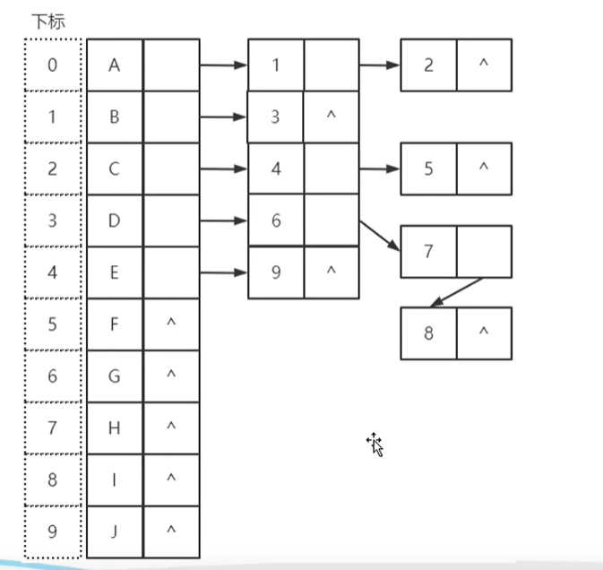

树与二叉树
树与二叉树
1.树的概念
树（Tree）是n（n≥0）个结点的有限集。n=0时被称为空树。在任意一颗空树中：
有且仅有一个特定的节点被称为根节点（root）
当$n>1$时，其余节点可以分为m（m>0）个互相不相交的有限集T1、T2、……、Tm，其中每一个集合本身又是一棵树，称之为根的子树（Subtree）。如图左侧即为树的一种；而右侧由于子树存在相交不为空情况则不为树。
graph TB;
A(A)-->B(B)
A-->C(C)
B-->D(D)
B-->E(E)
B-->F(f)
C-->G(G)
a(A)-->b(B)
a-->c(C)
b-->d(D)
b-->e(E)
b-->f(f)
c-->g(G)
f-->g由于定义本身具有==递归==的思想，因此树很多时候都能用递归的思想去解决实际问题。
树的表示
双亲表示法 data|parent
|
| 编号 | data | parent |
|---|---|---|
| 0 | A | ==-1== |
| 1 | B | 0 |
| 2 | C | 0 |
| 3 | D | 1 |
| 4 | E | 1 |
| 5 | F | 1 |
| 6 | G | 2 |
双亲表示法在已知子节点向上寻根节点的时间效率较高，但已知根节点去寻子节点的复杂度较高。
孩子表示法 data|child1|childe2|….. （较为常用）
存在可以存在许多孩子指针域。
|
但是这种表示的缺点是构造树的时候可能有很多指针域并没有用上而造成空间上的浪费。
优化方法是：在每一个结点的数据域中增加一个变量$degreee$用来记录此节点的孩子指针域的个数
|
当然还可以用哈希表（散列表）的形式储存树。即用顺序表将每个结点储起来，用单链表的形式将每个结点的子结点链接起来，当我们遍历树的时候就可以通过遍历顺序表形式来遍历所有子结点。
此种表示形式要寻找某个特定结点的子节点的时候非常容易定位。但是与双亲表示法相反，此种表示法在寻找双亲节点时需要遍历整个树。

孩子兄弟表示法 data|child|rightsibling
与孩子表示法相似，此种表示法只是多了一个指针域指向此结点右边的兄弟结点，便于寻找兄弟结点。
2 .二叉树的概念
二叉树（Binary Tree）是n(n>0)个结点的有限集合，该集合或者为空集（称为空二叉树）。或者由一个根节点和两课互不相交的、分别称为根节点的左子树和右子树的二叉树构成。与树类似，二叉树相当于结点的孩子域限定为了两个（degree=2）。（递归）
C语言种二叉树的结构体定义如下
|
二叉树的形式（特殊二叉树）
斜树
即所有的结点都沿一个方向延申（所有结点只有一个子结点且斜的方向一致），类似于链表，是线性链接的。
分为左斜树和右斜树。
满二叉树
如果一颗二叉树中，所有的结点都有左子树和右子树，且所有的叶子结点都在同一层上。满二叉树一定是所有相同深度二叉树的节点最多，叶子结点最多的二叉树。
完全二叉树
如果按层的顺序给满二叉树编号，完全二叉树的编号和满二叉树的编号在叶子结点未编号完之前一摸一样。由于此种特性。我们可以用数组来表示完全二叉树。
完全二叉树的数组表示：
| a | b | c | d | e | f |
| —- | —- | —- | —- | —- | —- |
| 0 | 1 | 2 | 3 | 4 | 5 |
由此表示我们可以得到推论：
- 对于位置为$k$的结点，左子结点=2k+1，右子结点=2k+2。
- 最后一个非叶结点的位置为(N/2)-1，N为数组长度。
通过这些推论，我们可以通过数组表示完全二叉树且很轻松的找到一个节点的子结点，当然父母结点也可以通过倒推的方式寻找。
3. 二叉树的遍历及其代码实现
树的遍历即以某种顺序对树中所有结点的数据域进行某种操作（如打印等）。其按顺序划分大致可以分为前序遍历、中序遍历、后序遍历三种情况。下面将分别介绍这三种遍历方式。
1. 中序遍历(LDR)
中序遍历是从根结点开始对每一个结点按照左结点，本结点，右结点的顺序进行遍历的。如上图树的遍历方式就是：
|
其代码实现分为两种方式：
递归法
构造一个递归的函数，函数先中以递归形式遍历结点的左子树，再访问本结点，最后遍历结点的右子树，C语言实现代码如下：
/*
struct TreeNode
{
int val;
struct TreeNode *left, *right;
}
*///树结点的定义
void InorderTraversal(TreeNode* root) //中序遍历函数
{
InorderTraversal(root->left); //遍历左子树
printf("%d", root->val); //打印本节点的值
InorderTraversal(root->right); //遍历右子树
return;
}递归方式的实现比较简单，利用递归实现的时间复杂度是O(n)，空间复杂度也是O(n)。
循环迭代法
此种方法是用栈这种数据结构实现的，利用的是栈的后入先出原理($LIFO$)，我们直接来看其C语言代码实现：
int IsEmpty(struct TreeNode **Stack) //判断栈空函数
{
return *Stack == NULL ? 1 : 0; //只判断栈底元素是否为空即可
}
void InorderTraversal(TreeNode* root)
{
struct TreeNode *Stack[MAXN]; //定义一个栈用来获取结点
int top = 0; //栈顶
Stack[top] = NULL; //置空
struct TreeNode* temp = root; //定义一个临时变量来遍历结点
while (temp != NULL || !IsEmpty(Stack)) //栈不为空且temp不为空则持续循环
{
while (temp != NULL) //temp不为空指针则循环直到左叶子结点，否则将直接弹栈
{
Stack[top++] = temp; //temp入栈
temp = temp->left; //访问左子树
}
temp = Stack[--top]; Stack[top] = NULL; //弹栈并输出
printf("%d", temp->val);
temp = temp->right; //访问右子树，右子树是空若栈不为空则继续弹栈，否则访问右子树
}
return;
}这样不断的循环迭代直到所有的结点都入栈弹栈后即循环完毕中序遍历完毕。
2. 前序遍历(VLR)
递归法
由于递归法较为简单，这里直接上代码：（访问结点在前即可）
void PreorderTraversal(TreeNode* root) //中序遍历函数
{
printf("%d", root->val); //打印本节点的值
PreorderTraversal(root->left); //遍历左子树
PreorderTraversal(root->right); //遍历右子树
return;
}循环迭代法
与中序遍历相同，只需简单的更换输出顺序即可。
int IsEmpty(struct TreeNode **Stack) //判断栈空函数
{
return *Stack == NULL ? 1 : 0; //只判断栈底元素是否为空即可
}
void PostorderTraversal(struct TreeNode *root)
{
struct TreeNode *Stack[MAXN]; //定义一个栈用来获取结点
int top = 0; //栈顶
Stack[top] = NULL; //置空
struct TreeNode *temp = root; //定义一个临时变量来遍历结点
while (temp != NULL || !IsEmpty(Stack)) //栈不为空且temp不为空则持续循环
{
while (temp != NULL) //temp不为空指针则循环直到左叶子结点
{
printf("%d", temp->val); //先输出，后入栈
Stack[top++] = temp; //temp入栈
temp = temp->left; //访问左子树
}
temp = Stack[--top]; Stack[top] = NULL; //弹栈
temp = temp->right; //访问右子树，右子树是空若栈不为空则继续弹栈，否则访问右子树
}
return;
}把输出（访问）调整到第二个循环的入栈开头即可。
3. 后序遍历(LRD)
递归法
void PostorderTraversal(TreeNode* root) //中序遍历函数
{
PostorderTraversal(root->left); //遍历左子树
PostorderTraversal(root->right); //遍历右子树
printf("%d", root->val); //打印本节点的值
return;
}循环迭代法
后续遍历的循环迭代就与前序中序不太相同了，由于是先访问左子节点和右子节点，而左节点不能直接访问到右节点，故代码需要有一定的改变，这里我们多定义一个临时变量PreAccess用来记录已经访问过的结点，防止重复访问。
int IsEmpty(struct TreeNode **Stack) //判断栈空函数
{
return *Stack == NULL ? 1 : 0; //只判断栈底元素是否为空即可
}
void PreorderTraversal(TreeNode* root)
{
struct TreeNode *Stack[MAXN]; //定义一个栈用来获取结点
int top = 0; //栈顶
Stack[top] = NULL; //置空
struct TreeNode* temp = root; //定义一个临时变量来遍历结点
struct TreeNode *PreAccess = NULL; //定义一个临时变量PreAccess用来记录已经访问过右子树结点的结点
while (temp != NULL || !IsEmpty(Stack)) //栈不为空且temp不为空则持续循环
{
while (temp != NULL) //temp不为空指针则循环直到左叶子结点，否则将直接弹栈
{
Stack[top++] = temp; //temp入栈
temp = temp->left; //访问左子树
}
temp = Stack[top - 1]; //temp置为栈顶元素，判断右子树是否为空
if (temp->right != NULL && PreAccess != temp->right) //右子树没访问过且不为空
temp = temp->right;
else //否则弹栈并输出
{
temp = Stack[--top];
Stack[top] = NULL;
printf("%d", temp->val);
PreAccess = temp; //标记节点为已访问
temp = NULL; //置空，访问下一个栈顶元素
}
}
return;
}